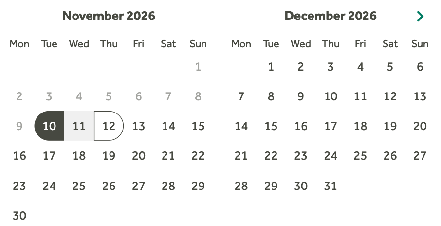
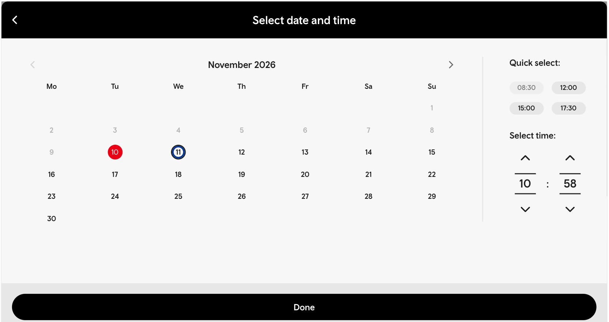

2.1.2 No Keyboard Trap (A)
What WCAG says:
If keyboard focus can be moved to a component of the page using a keyboard interface, then focus can be moved away from that component using only a keyboard interface, and, if it requires more than unmodified arrow or tab keys or other standard exit methods, the user is advised of the method for moving focus away.
Check the official guidance for Understanding 2.1.2 No Keyboard Trap
What this means
Some users do not use a mouse or touchscreen, and navigate websites using keyboard commands such as the Tab, Shift+Tab, and arrow keys.
Users who only use keyboards must be able to navigate in and out of page components and not get ‘trapped’ where they would need to use a mouse or touchscreen – they must always have a way to move on.
Why it matters
This matters because some people with vision impairments or physical disabilities rely on a keyboard to use the web and cannot use a mouse (or other devices like a touch screen).
How to check
You can check for a keyboard trap by using the Tab key to move through the page.
When you reach an interactive component (such as a date picker or video player), move into it. Next try and leave it by only using the keyboard (Tab, Shift + Tab, arrow keys and Esc) and continue to the next part of the page.
How to test in detail for 2.1.2 No Keyboard Trap
Common mistake
A date picker that cannot be dismissed using a keyboard
A user tabs to a date picker in a form and presses Tab to move into the widget. They use the arrow keys to choose a date and press Tab again, but nothing happens. They try every key, but they are stuck inside the date picker. The only way to continue is to click or tap somewhere else.
This widget would fail because the user is stuck inside the date picker if they are only using a keyboard. This has stopped them from completing their user journey.

Good example
A date picker that can be dismissed using a keyboard
A user tabs to a date picker in a form and presses Tab to move into the widget. They use the arrow keys to choose a date and press Tab again before selecting ‘Done’. This moves them to the next form field.
This widget would pass because the user was able to move into, around, and exit the date picker and continue with their user journey. Additionally, it aligns with what controls the user expects, such as being able to tab to the Done button and press it, or use Esc to leave.

Non-interference
This is one of four special criteria which all content on a page needs to meet, even if it is normally out of scope of an audit (such as adverts or other third party content). These are referred to as “non-interference” criteria because content must not interfere with the rest of the page. The official standard has more detail about non-interference.
Related success criteria
No Keyboard Trap is closely related to the following success criteria:
- 2.1.1 Keyboard (A) applies when users cannot use a component with a keyboard.
- 2.4.7 Focus Visible (AA) applies when users can exit a component, but they cannot see where they are on the page.
- 2.4.11 Focus Not Obscured (AA) applies when users can exit a component but something is covering the keyboard focus and they cannot see it.
Last updated
This page was last updated in November 2026.